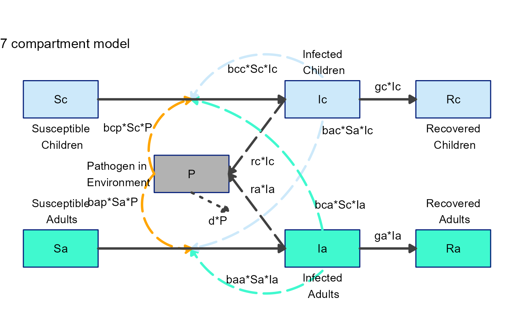
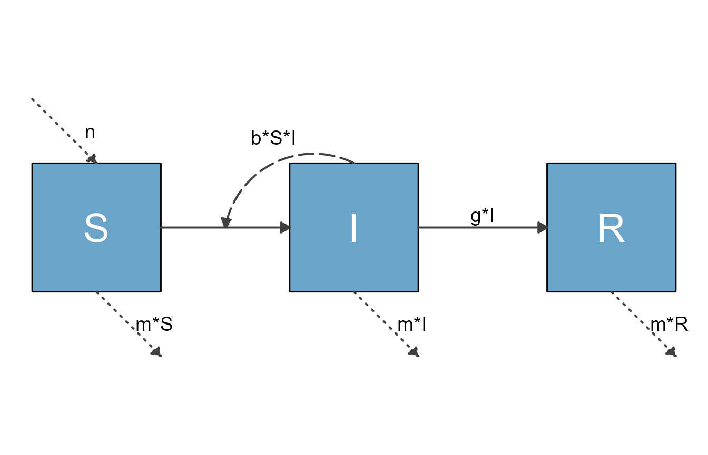
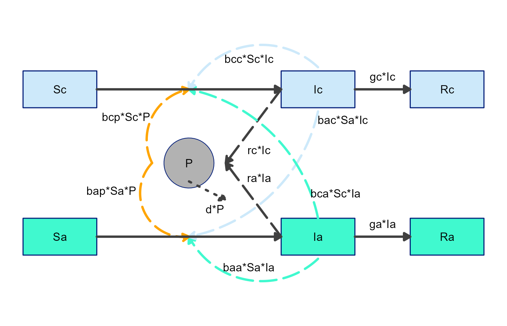

Modifying the ggplot2 object or code
Source:vignettes/D_modify_ggplot_code.Rmd
D_modify_ggplot_code.RmdIntroduction
We assume you went through the previous vignettes that showed you how to use the functionality provided by flowdiagramr to produce fairly good looking (in our biased opinion) diagrams. We believe (hope) that this often gives you a diagram you are happy with.
However, occasionally you might want to make additional tweaks beyond what flowdiagramr can do. Fortunately for you, there is a way to do this, which is the topic of this vignette. There’s one easy way, and one approach that’s a bit more involved but also more flexible.
Modifying the ggplot object
The object returned by make_diagram() is a ggplot
object, which means you can do all the things you can do to those
objects. That includes further alterations and updates. Here are a few
simple examples.
Example 1
Back to our simple SIR model
# specify the model
variables = c("S","I","R")
flows = list(S_flows = c("n", "-b*S*I", "-m*S"),
I_flows = c("+b*S*I","-g*I", "-m*I"),
R_flows = c("g*I", "-m*R"))
sirmodel = list(variables = variables, flows = flows)
# prepare, make and plot
diag_list <- prepare_diagram(sirmodel)
diag1 <- make_diagram(diag_list)
plot(diag1)
Let’s assume you want to give it a title and add some more text into
the plot. You can just use the regular ggplot2 syntax.
diag2 <- diag1 + ggtitle("My diagram") + geom_label(aes(x=2,y=2),label="My label")
plot(diag2)Example 2
This example shows the overall suggested workflow, namely first using
all the functionality that flowdiagramr provides, and
then further modifying the plot with ggplot2 commands.
For this example, we revisit our somewhat complex 7-compartment model. This is the code we had previously to get a decent figure.
Model definition
variables = c("Sc","Ic","Rc","Sa","Ia","Ra","P")
flows = list(Sc_flows = c("-bcc*Sc*Ic","-bca*Sc*Ia","-bcp*Sc*P"),
Ic_flows = c("bcc*Sc*Ic","bca*Sc*Ia","bcp*Sc*P","-gc*Ic"),
Rc_flows = c("gc*Ic"),
Sa_flows = c("-bac*Sa*Ic","-baa*Sa*Ia","-bap*Sa*P"),
Ia_flows = c("bac*Sa*Ic","baa*Sa*Ia","bap*Sa*P","-ga*Ia"),
Ra_flows = c("ga*Ia"),
P_flows = c("rc*Ic","ra*Ia","-d*P")
)
mymodel = list(variables, flows)Basic layout settings
mysettings = list( varlocations = matrix(data = c("Sc", "", "Ic", "Rc",
"", "P", "", "",
"Sa", "", "Ia", "Ra"),nrow = 3, byrow = TRUE),
varbox_x_size = 2,
varspace_x_size = 1.5
)List of all styling updates
# define list of updates
diagram_settings = list(var_fill_color = c(Sc = "#cde9fa", Ic = "#cde9fa",
Rc = "#cde9fa", Sa = "#40f9cf",
Ia = "#40f9cf", Ra = "#40f9cf",
P = "#b2b2b2"),
var_outline_color = c(all = "#031e79"),
var_label_size = c(all = 4),
var_label_color = c(all = "black"),
flow_label_size = c(all = 4),
flow_curvature = c(i_baaSaIa = -0.5, i_bccScIc = 0.5,
i_bacSaIc = -0.3, i_bcaScIa = 0.3,
g_raIa = 0, g_rcIc = 0, i_bcpScP = -0.5),
flow_xstart = c(i_bcpScP = -1, i_bapSaP = -1),
flow_ystart = c(i_bcpScP = -0.5, i_bapSaP = -0.5, i_bacSaIc = -1.1,
i_baaSaIa = -1.1, i_bccScIc = 0.1),
flow_line_color = c(i_baaSaIa = "#40f9cf", i_bacSaIc = "#cde9fa",
i_bapSaP = "orange", i_bcpScP = "orange",
i_bccScIc = "#cde9fa", i_bcaScIa = "#40f9cf"),
flow_line_size = c(all = 1.1),
flow_xlabel = c(i_bcaScIa = 1, i_bacSaIc = 4,
i_bapSaP = -1.25, i_bcpScP = -2.25,
g_raIa = 0.15, g_rcIc = 0.15),
flow_ylabel = c(m_gcIc = 0.25, m_gaIa = 0.25,
i_bcaScIa = -2.5, i_bacSaIc = -0.5,
i_baaSaIa = -2.15, i_bccScIc = -0.5,
e_dP = -0.5,
g_raIa = 0.5, g_rcIc = -0.75)
)Prepare, update and make the diagram.
diagram_list <- prepare_diagram(mymodel, mysettings)
diagram_list2 <- update_diagram(diagram_list, diagram_settings)
diag <- make_diagram(diagram_list2)
plot(diag)
Notice that we made a change above, we didn’t add the full text to
the boxes but kept the variable names. Let’s assume we want to add the
full text next to the boxes. We can simply add them as text to the
ggplot object, like this:
var_label_text = c(Sc = "Susceptible\n Children", Ic = "Infected\n Children", Rc = "Recovered\n Children",
Sa = "Susceptible\n Adults", Ia = "Infected\n Adults", Ra = "Recovered\n Adults",
P = "Pathogen in\n Environment")
xpos = c(2,9,12.5,2,9,12.5,3.5)
ypos = c(3.5,5.5,3.5, 1.5,-0.5,1.5, 2.5)
diag2 <- diag + ggtitle("7 compartment model") +
annotate("text", x = xpos, y = ypos, label = var_label_text)
plot(diag2) This is not perfect and needs a bit more tweaking, but you get the idea. This approach allows you to add or modify the ggplot object returned from flowdiagramr any way you want.
Modifying the ggplot2 code
While the above approach toward modifying the ggplot
object returned by make_diagram() gives you some additional
flexibility, you can go a step further. The most flexible approach to
adjust diagrams is to modify the ggplot code that produces the diagram.
flowdiagramr provides a function that returns the code,
which you can then edit like you would any ggplot code.
We’ll illustrate this approach with a few examples.
Example 1
First, you define your model as usual.
# specify the model
variables = c("S","I","R")
flows = list(S_flows = c("n", "-b*S*I", "-m*S"),
I_flows = c("+b*S*I","-g*I", "-m*I"),
R_flows = c("g*I", "-m*R"))
sirmodel = list(variables = variables, flows = flows)Next, you prepare the model
diag_list <- prepare_diagram(sirmodel)Once you have the diagram list ready, you can send it to
write_diagram, a function that writes the full code needed
to generate the diagram. You can specify the location and name for the
file. If you don’t provide those, it will be stored in the current
working directory under the name diagram_code.R.
# write the current diagram code to a file, overwrite if it exists
write_diagram(diagram_list = diag_list, filename = 'model1_diagram_code.R', always_overwrite = TRUE)If things worked well, you should get a message telling you the location where the code was saved. The code that is generated is completely self-contained, that means you can give it to anyone, who can run it and reproduce your model figure.
If you run the code that is generated, it will create the diagram
structure as an object called diagram_plot. You can then
plot or save that object (there is code at the bottom of the generated
file for that).
For this example, here is what you get.
source('model1_diagram_code.R')
#> Warning: Using `size` aesthetic for lines was deprecated in ggplot2 3.4.0.
#> ℹ Please use `linewidth` instead.
plot(diagram_plot)
Having all the code that generates the figure allows you to do some fine-tuning. We provided hopefully enough comments in the code to make it clear what happens where. That said, to be able to tweak the diagram this way requires being familiar with creating figures in ggplot.
Let’s assume for this example that you want to add some text below
the I compartment. In this case, you don’t need to modify
any of the existing code, just add a some code at the end. As shown
above, you could do this by just modifying the ggplot
object returned from flowdiagramr. But here we’ll do it by editing the
code.
The following lines of code appended to the bottom of
sirmodel1_diagram_code.R, just before the final
plot statement, will do the trick:
#######################
### LAST PART OF THE GENERATED CODE BEFORE ADDITION
#######################
with_grid <- FALSE # default is false
if(with_grid == FALSE) {
diagram_plot <- diagram_plot +
theme_void() # makes an empty plot theme with no axes, grids, or ticks
} else {
# The else here may seem silly, but otherwise the returned plot is NULL
diagram_plot <- diagram_plot # just returns default ggplot2 theme
}
#######################
### YOUR NEW ADDITION
#######################
# make a new data frame of text
text_df <- data.frame( x = 3, y = -1,
lab = "Infected and Infectious"
)
diagram_plot <- diagram_plot +
geom_text(data = text_df, aes(x = x, y = y, label = lab), size = 8)
#######################
### PART OF THE GENERATED CODE AFTER ADDITION
#######################
# These lines plot or save the generated diagram.
# Uncomment them if you want to perform either action.
# plot(diagram_plot)
# ggsave('diagram_plot.png',diagram_plot)Then save the new code, let’s call it
sirmodel1_diagram_code_modified.R. Running the new code
will add the wanted text to the diagram plot
Example 2
Let’s look at another example, one that requires this approach. For that, we again consider the 7-compartment model. Assume we done all our styling using the flowdiagramr functions as above. But we want to do something that is currently not supported, namely changing the shape of one of the variables.
To do that, we take the diagram list we produced above and write the code to a file, then edit it.
write_diagram(diagram_list = diagram_list2,
filename = 'model2_diagram_code.R',
always_overwrite = TRUE)If you run the code that is generated, you should see a figure like this
Now let’s turn the shape of the P box into a circle. You
can find the part of the code that creates the boxes (it’s the first for
loop) and modify as follows:
#######################
### LAST PART OF THE GENERATED CODE BEFORE ADDITION
#######################
for(i in 1:nrow(variables)) {
#######################
### YOUR NEW ADDITION
#######################
if(variables$name[i] == "P") {
diagram_plot <- diagram_plot +
geom_point(
data = variables[i, ],
aes(x = xmin+(xmax-xmin)/2, y = ymin+(ymax-ymin)/2), #centers
color = variables[i, "outline_color"],
fill = variables[i, "fill_color"],
shape = 21,
size = 23
)
} else {
#######################
### END YOUR NEW ADDITION
#######################
diagram_plot <- diagram_plot +
geom_rect(
data = variables[i, ],
aes(xmin = xmin, xmax = xmax, ymin = ymin, ymax = ymax),
color = variables[i, "outline_color"],
fill = variables[i, "fill_color"]
)
}
}Now save the modified script, source it and plot the generated
diagram_plot object to get this figure:

Again, not quite there yet. We would need to update placement of some of the arrows. Since we modified the ggplot code, we either need to make further modifications also in the ggplot code. Alternatively, one can adjust as much as possible previously. E.g., in this case, adjust arrow placement above in anticipation of this change later in the code.
General suggestions
It should be clear from these examples that once you have the ggplot code, you can do any modifications you want. At this point, the options are endless and you can change the code to get exactly what you want - at the expense of having to write/edit code yourself.
As mentioned before, the best workflow is to use the flowdiagramr functionality to get as far as it takes you, and then as needed make further manual modifications.
Of course, once you have started manual editing of the code, things are not reversible, i.e. you have basically left the flowdiagramr package infrastructure and are now adjusting the diagram on your own. You can of course always re-generate the code and copy your modifications over (as long as you remember to not overwrite your code.)
Next steps
This concludes the main tutorials for the package. Several additional vignettes are available. You can access all from the package website.
While flowdiagramr was designed with compartmental/systems modeling in mind, you can use it to create diagrams for anything consisting of nodes/boxes and flows/arrows. One of the vignettes provides some examples.
A fairly long vignette shows a lot of further model examples, and provides some tips on how to make good-looking diagrams even if flowdiagramr doesn’t fully cooperate. We recommend you check that one out.
Another vignette discusses additional topics such as using flowdiagramr together with our modelbuilder package and how to crop white space around the diagrams.
We also have a short vignette that compares flowdiagramr to similar R packages.